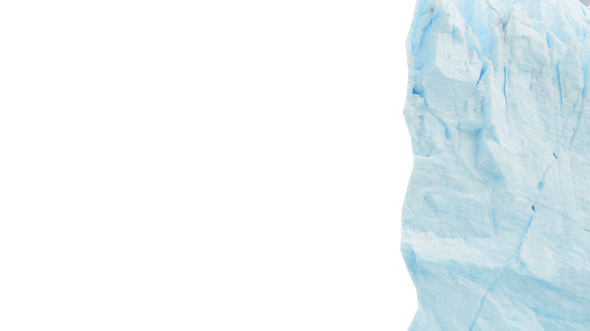
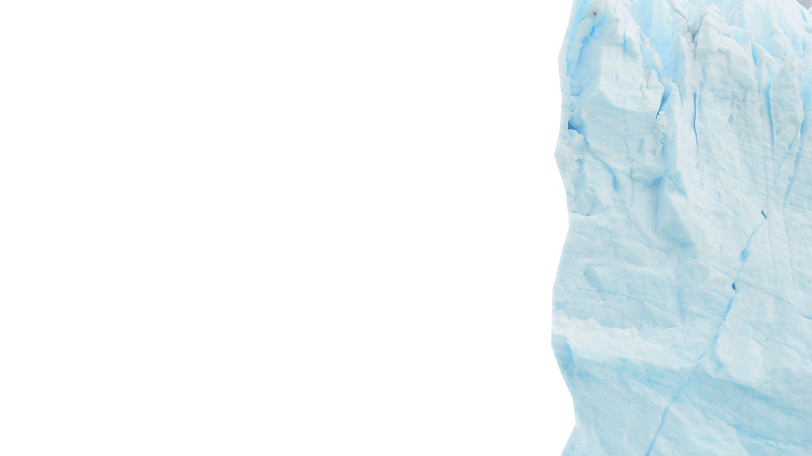
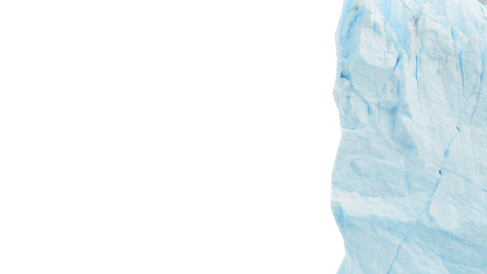
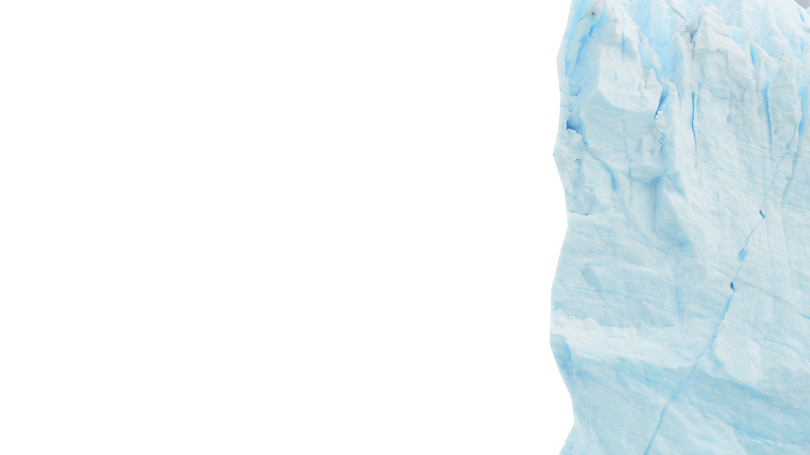

Mount K2


 



Gunung K2 terletak di Pegunungan Karakoram, yang merupakan bagian dari rentang Pegunungan Himalaya. Secara geografis, K2 terletak di perbatasan antara Pakistan dan Tiongkok (Wilayah Otonomi Xinjiang). Puncak K2 memiliki ketinggian 8.611 meter (28.251 kaki) di atas permukaan laut, menjadikannya gunung tertinggi kedua di dunia.
K2 memiliki ketinggian puncak yang mencapai 8.611 meter (28.251 kaki) di atas permukaan laut, menjadikannya salah satu puncak tertinggi di dunia. Tingginya ini menjadikannya tantangan ekstrem bagi para pendaki gunung.
Meskipun dikenal sebagai K2, gunung ini sebenarnya belum diberi nama lokal yang dikenal secara umum oleh penduduk setempat. Nama "K2" diberikan oleh Survei Geografis Inggris pada awal abad ke-20. Di wilayah Pakistan, gunung ini dikenal sebagai "Chogori" yang berarti "Gunung Besar".
Pendakian ke K2 adalah salah satu tantangan paling berat bagi para pendaki gunung. Jalur pendakian dikenal karena kesulitannya yang tinggi dan bahaya yang melibatkan. Faktor-faktor seperti kondisi cuaca ekstrem, lereng yang curam, dan seringnya badai salju menjadikannya pendakian yang sangat berisiko.
Puncak K2 pertama kali berhasil dicapai pada tanggal 31 Juli 1954 oleh ekspedisi Italia yang dipimpin oleh Ardito Desio. Puncak ini dicapai oleh dua pendaki, Achille Compagnoni dan Lino Lacedelli.
K2 dikenal sebagai salah satu gunung paling mematikan di dunia. Tingkat kematian di antara pendaki yang mencoba menaklukkannya jauh lebih tinggi dibandingkan dengan Gunung Everest. Alasan untuk tingkat kematian yang tinggi termasuk jalur yang lebih sulit dan kondisi cuaca yang ekstrem.
Jalur pendakian yang paling umum adalah melalui sisi Pakistan. Rute pendakian terkenalnya adalah Jalur Abruzzi, yang dinamai setelah ekspedisi Italia yang menggunakannya untuk pendakian pertama mereka
Sebagian besar wilayah sekitar Gunung K2 merupakan daerah terpencil dan sulit diakses. Hal ini membuat pendakian menjadi lebih sulit karena kurangnya infrastruktur pendukung dan layanan penyelamat yang terbatas.
Meskipun tantangan pendakian yang berat, Gunung K2 menawarkan pemandangan alam yang spektakuler. Para pendaki sering kali disuguhi pemandangan pegunungan yang megah dan lembah yang indah, menjadikannya tujuan yang menarik bagi pecinta alam.
Wilayah sekitar Gunung K2 merupakan daerah konservasi yang penting. Perubahan iklim dan aktivitas manusia telah menyebabkan perubahan signifikan dalam lingkungan alaminya. Oleh karena itu, upaya konservasi terus dilakukan untuk melindungi ekosistem yang rapuh di sekitarnya.